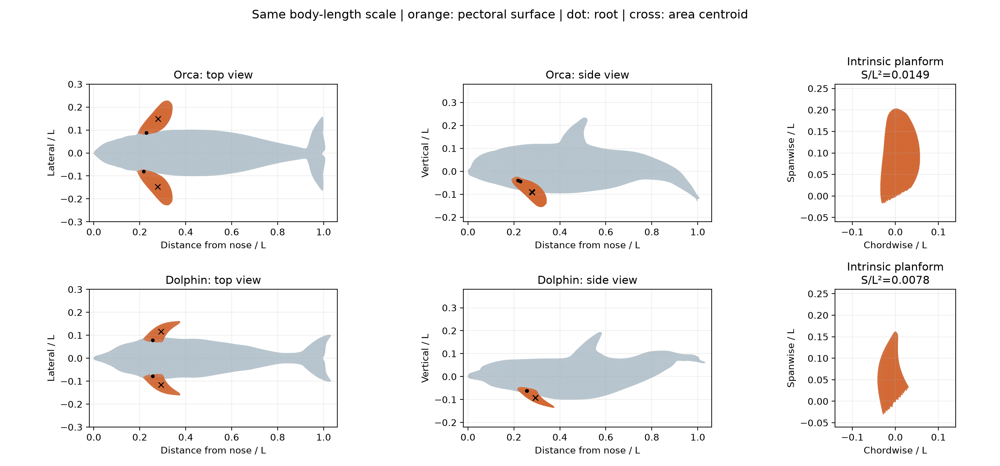
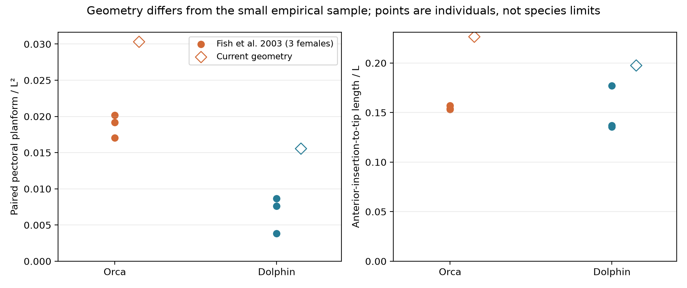

2026-10-08 · 实际网格测量、根部分界敏感性与文献核对 · 本次未运行 CFD
Orca 的双侧胸鳍面积 / L² 为 0.0303，Dolphin 为 0.0156，比值 1.95。共同根部平面法的扰动检查给出比值 1.79–2.09。更低展弦比与更大横向伸出也支持“宽、桨状”的几何描述。局部体径归一化展长、纵向力臂的差异则较小。两个模型都超出本次找到的三个雌性个体的归一化胸鳍面积范围，因此不能直接称为典型物种形态。
Orca：[local path omitted]，初始时刻，16,201 点、32,384 三角形。沿用 BioGeomBatch 的 sweep35_segmentation.npz 双侧胸鳍分区，已验证分区记录的网格 SHA-256 与源网格一致。
Dolphin：用户指定目录下 dolphin_fast_swimming_Bayley_reconstruction_V2_vid_7_30_fixed_smoothed_triangulated.mb，Maya 第 1 帧，29,986 点、59,968 三角形。从实际 Maya 场景读取世界坐标并三角化；没有使用尾部放大、tailstand、粗化或仅身体版本。共检查目录中 10 个场景，并从这一原始完整场景另取多个帧用于姿态检查。场景来源由用户提供；未找到该文件与论文最终求解器输入逐点一致的清单，因此称为“用户提供的 Guo reconstruction”。
Guo et al. (2023) 方法部分明确研究宽吻海豚 Tursiops truncatus，通过实拍视频、Maya 骨架和细分表面重建运动。此处提取的是这些 Maya 文件中的几何，不是从论文图片估测。

橙色：本次测量的胸鳍表面；圆点：根部边界中心；叉号：胸鳍投影面积中心。前两列保留各自的安装姿态。右列投影到各自胸鳍最佳拟合平面，去除整体安装倾角对面积的影响。所有长度轴采用各自的 L 归一化，没有把胸鳍独立放大到相同大小。
| 指标 | Orca | Dolphin | Orca / Dolphin |
|---|---|---|---|
| 双侧胸鳍平面面积 / L² | 0.0303 | 0.0156 | 1.95 |
| 双侧胸鳍面积 / 非胸鳍湿表面积 | 0.0595 | 0.0372 | 1.60 |
| 前缘根部至鳍尖长度 / L | 0.2265 | 0.1975 | 1.15 |
| 单侧展弦比 b²/S | 3.3854 | 5.0167 | 0.67 |
| 展长 / 根部局部等效体径 | 1.2193 | 1.1449 | 1.06 |
| 根部中心距鼻端 / L | 0.2226 | 0.2562 | 0.87 |
| 面积中心横向距离 / L | 0.1479 | 0.1164 | 1.27 |
| 相对 x=0.5L 的纵向距离 / L | 0.2213 | 0.2074 | 1.07 |
除双侧总面积外，表中胸鳍长度、根位置与力臂均为左右平均。Orca 左右平面面积约相差 3.5%（相对于两侧均值），与既有分区边界不完全对称有关，不应解释成生物学左右差异。Dolphin 相差约 0.54%。
几何含义：面积约增加 95%，前根至鳍尖长度约增加 15%，展弦比降低约 33%，横向几何距离增加约 27%。这比“Orca 所有尺度都更大”更具体。根部约向前移 0.034L，而面积中心只向前移约 0.014L；根位置不等于力作用点。纵向几何距离约增加 7%。
pasted__joint16/17 附近为锚点，使用向外且向下的平面法向 (0,−0.6,±0.8)，在前躯选取含最外侧鳍面的连通区域。以三角形中心判定分区，原网格不切割、不改写。此选择可复现，但不是已有人工标注真值。原姿态下根中心至鳍尖向量给出的后掠角约为 Orca 35.2°、Dolphin 55.3°；下倾角约为 32.9°、27.0°。Orca 使用的是人为指定的 Sweep_35 工况，这些角度是当前安装配置，不能当成物种固有安装角。湿表面积的一半作为另一面积估计给出 Orca 0.03177、Dolphin 0.01738，比值 1.83；厚度、弯度和根部曲面使其大于平面投影，应单独报告。
Fish, Peacock & Rohr (2003), Table I：每种取表中三个雌性个体。方法明确 flipper area 为双侧胸鳍总平面面积，flipper length 为两侧平均前插入点—鳍尖距离；L 为鼻端—尾鳍缺口。已查看原 PDF 第 3 页逐项核对，保留原表 0.026 m² 等值，不作未经依据的修正。
| 物种 | L (m) | b (m) | 双侧 S (m²) | S / L² | b / L |
|---|---|---|---|---|---|
| Orca | 4.16 | 0.64 | 0.349 | 0.02017 | 0.1538 |
| Orca | 4.46 | 0.70 | 0.339 | 0.01704 | 0.1570 |
| Orca | 5.16 | 0.79 | 0.510 | 0.01915 | 0.1531 |
| Dolphin | 2.51 | 0.34 | 0.048 | 0.00762 | 0.1355 |
| Dolphin | 2.60 | 0.46 | 0.026 | 0.00385 | 0.1769 |
| Dolphin | 2.70 | 0.37 | 0.063 | 0.00864 | 0.1370 |

实测样本：Orca S/L²=0.01704–0.02017；Dolphin=0.00385–0.00864。当前模型：分别为 0.03031 和 0.01555，都更大，且上述根部分界扰动不足以消除差距。模型的 b/L 也高于这几个实测个体。可能涉及模型重建、对象差异、体长姿态和解剖根部定义；现有证据不能把偏差归因到其中某一项，也不能因此直接判定模型错误。三个雌性样本不是物种总体范围。
Fish (2003) 的体径是最大身体深度，不能与本报告的根部局部等效径强行相除比较。该论文没有提供可直接套用到本几何的根位置和质心—胸鳍压力中心距离；因此本次对这两项完成的是模型间比较，而非严格物种实测验证。
Weber et al. (2009) 的孤立小型鲸豚胸鳍测试甚至将两个宽吻海豚标本分为不同平面类型。Weber et al. (2014) 支持虎鲸宽、桨状胸鳍作为形态—生态动机，但测试的是稳态来流中的刚性孤立鳍，其虎鲸标本展弦比约 1.9，低于本模型的约 3.4。根部、展长与样本差异需要核对，不能把文献孤立鳍系数原样赋给当前模型。Fish et al. (2003) 还没有观察到大胸鳍使头部归一化振幅进一步降低；因此“大胸鳍→更稳定”的推断并不成立。
可以支持：当前 Orca 模型提供一个相较现有 dolphin 重建具有更大相对胸鳍面积、更宽平面形状和更大横向作用距离的控制面构型。这给选择 Orca 提供了具体的几何机制动机。
仍不能支持：典型大型虎鲸相对所有海豚都有特殊控制优势；大面积必然提高机动性或抑制身体振荡；这个模型已严格代表物种平均形态；当前工况的后掠角就是解剖安装角；这次比较已经证明了推进或稳定性改善。体长归一化几何也不能单独证明“大型身体”的尺度效应，后者还涉及 Re、质量和惯性。
形态与生态研究提示虎鲸宽大、桨状的胸鳍可能承担重要控制功能。以具有较大相对胸鳍面积的虎鲸重建模型为对象，本研究考察：在躯体周期运动与尾鳍主导推进的条件下，胸鳍姿态如何改变整身体控制载荷，以及这些载荷变化伴随怎样的推进表现与功率代价？
如果不增加同一身体上的胸鳍形状/面积对照，研究主张应限定为“这一 Orca 构型中的姿态机制”。若要解释“宽大形状的作用”，需要在固定身体、运动、Re 和评价标准下改变胸鳍面积或平面形状；直接比较两种全身模型会把躯体、尾鳍、运动学差异混在一起。
同目录：metrics.json 保存逐侧指标和敏感性结果；validation.json 保存数值与网格检查；*_normalized_labeled.npz 保存测量网格与分区；meshes/inventory.json、meshes/phases.json 保存来源与姿态。export_maya.py、export_phases.py 读取 Maya 场景；geometry_metrics.py、run_comparison.py 实现测量；validate_measurements.py 做解析与不变性验证。原始 Maya 场景和求解器输入均未改动。